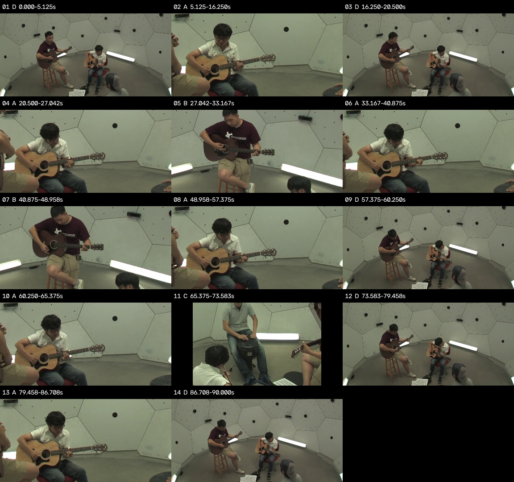
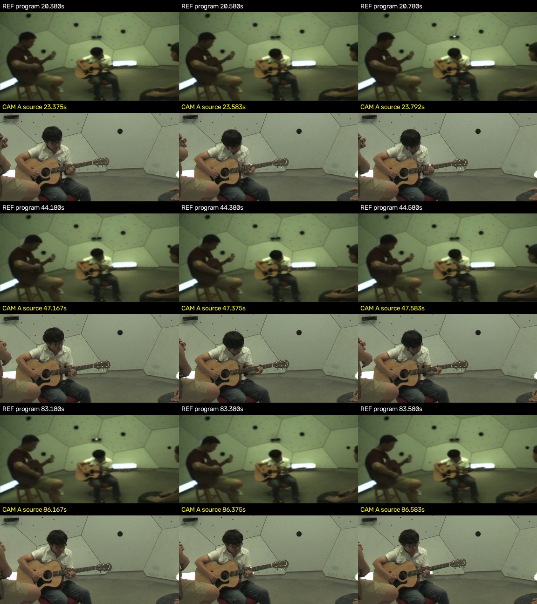
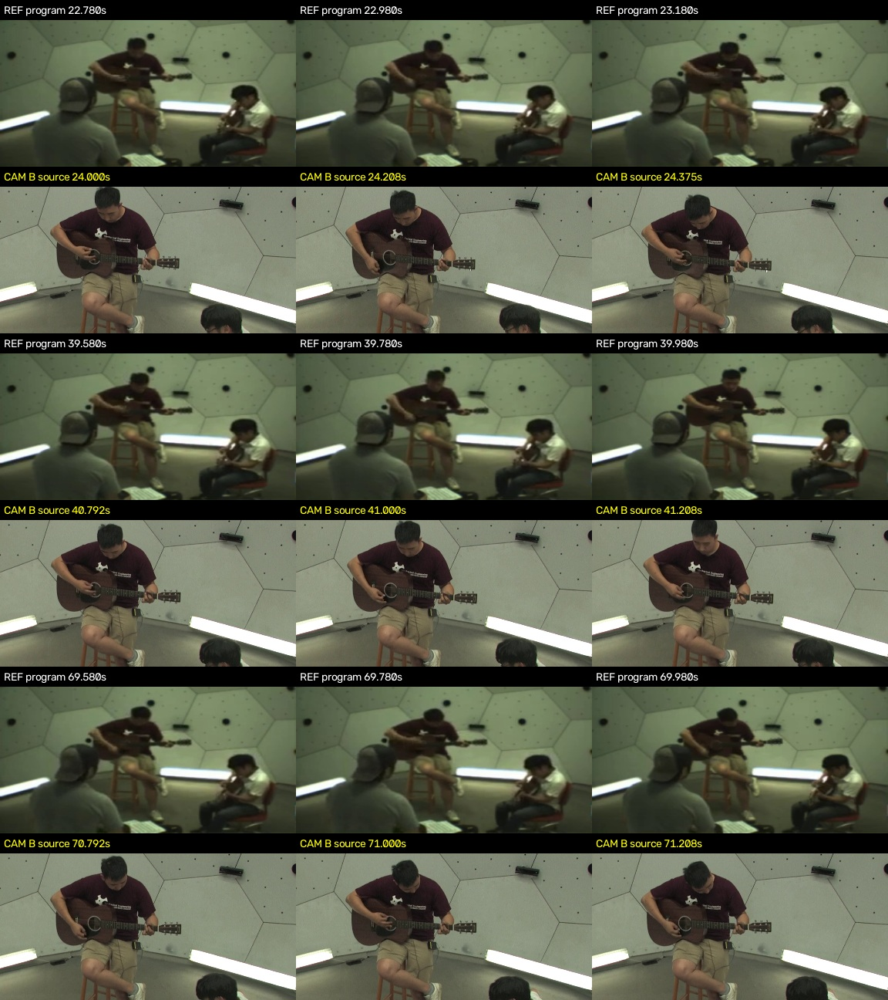
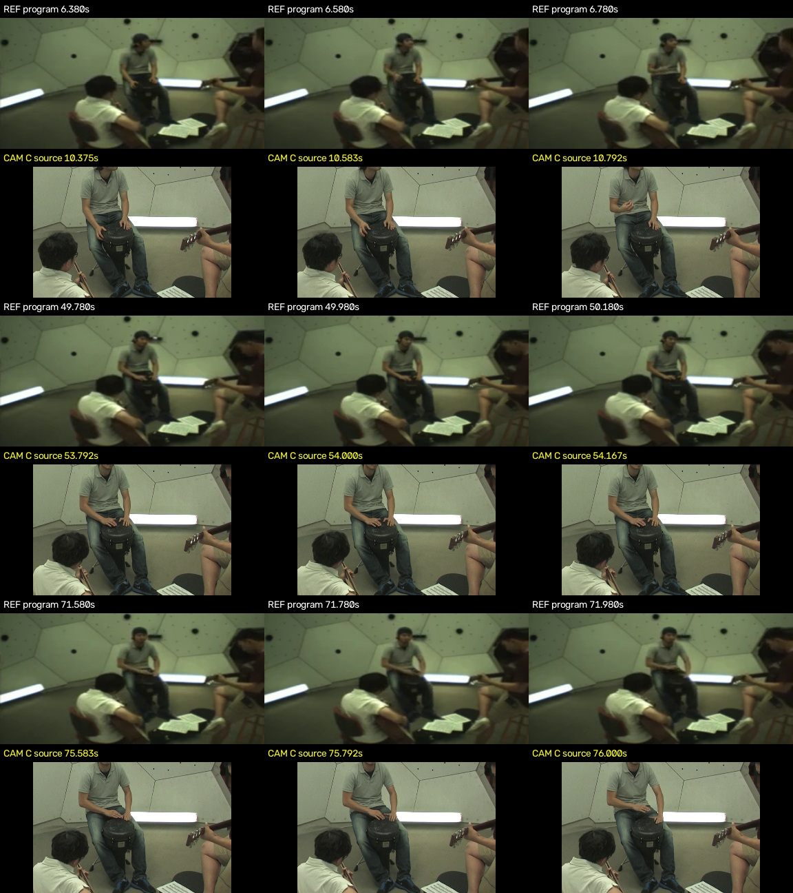
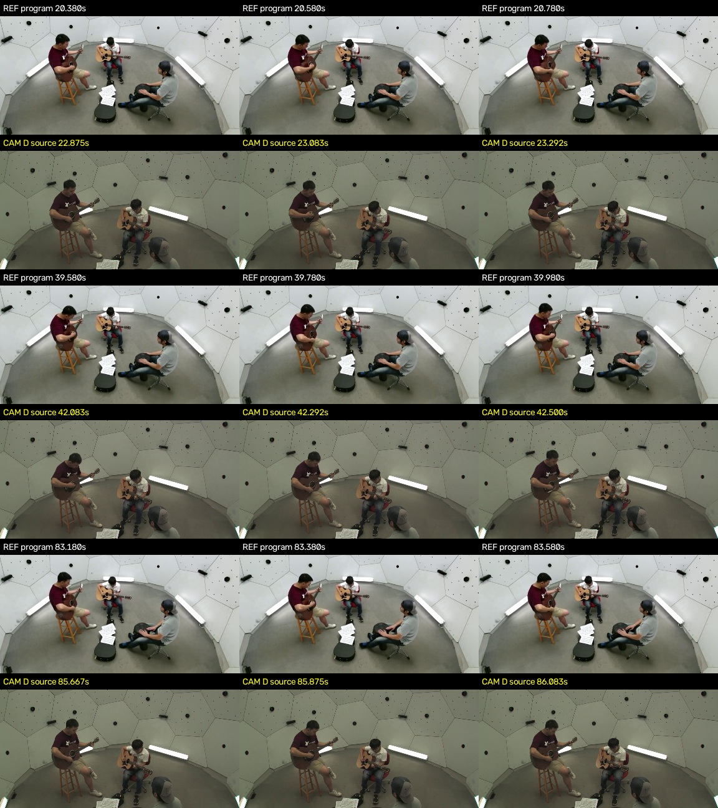

把四路无声机位，剪成一段合奏节目
给 Agent 四个不同视角的真实演奏录像、一份带声参考和主音轨。它要先对齐动作，再切换手部近景与合奏全景，交付一条音乐连续的 90 秒节目。
多机位音乐导播90 秒 · 纯 CLI最新版 sync_v7本轮 Sol xhigh 100.00 / 100 · 难度目标尚未达到
一、任务定义
这是同一个房间内三位乐手的研究／排练录制。A 是白衣吉他手，B 是酒红衣拨弦乐手，C 是灰衣手鼓手，D 是合奏全景。四路来自不同真实摄影机，原 HD 就没有音轨；它们有不同的前后余量，不能把文件第 0 秒直接对齐。
Agent 收到的带声同步参考
主音轨
48kHz、单声道、90 秒。成片完整保留它，不能删段、循环、静音、变速或换成其他音乐。
灰衣手鼓有轻拍和停顿；本题要求呈现真实动作，不把安静的声部说成持续独奏，也不要求虚构领奏交接。
四路机位：直接看看 Agent 拿到了什么
每路原本都没有声音。默认按各自文件时轴浏览，保留不同起点；带声参考负责提供同步依据。
查看同步答案，按节目时刻定位
以下是组织者真值，仅用于理解任务，不提供给求解模型。
| 机位 | 源时间 = 节目时间 + |
|---|---|
| A | 3.00s |
| B | 1.25s |
| C | 4.00s |
| D | 2.50s |
网页中的 MP4 为节省传输而压缩的浏览预览；原题视频仍保留在本地冻结求解包，原始文件的规格与 SHA256 见素材清单。主音轨 WAV 与冻结输入相同。
观众应该看到哪些画面
| 呈现对象 | 节目宽时间窗 | 要求 |
|---|---|---|
| 白衣吉他 | 0–30秒、60–90秒 | 两窗各有连续约4秒稳定手部画面 |
| 酒红衣拨弦 | 20–50秒 | 连续约4秒看清持琴、按弦／拨弦 |
| 灰衣手鼓 | 55–75秒 | 连续约4秒看清双手、鼓面与真实轻拍／停顿 |
| 合奏关系 | 0–35秒、65–90秒 | 各有约3秒全景，或清楚交代三人 |
使用单画面、正常速度和直接切换，通常持镜至少约 2 秒，避免闪切。手部细节不能一直由远景替代；除此之外允许不同切点和不同剪法。无需每个拍点都切一次。
交付内容与完整题面
| 交付物 | 验收内容 |
|---|---|
| program.mp4 | 1280×720、24fps、H.264/AAC、完整90秒。 |
| final_audio.wav | 48kHz无损主音乐，声道与主音轨一致。 |
| edit.json / sync.json | 覆盖完整节目；机位、入出点、源入点及同步证据。 |
| 重建脚本 + README | 仅从输入和镜头表重建，不依赖成片或专业软件。 |
二、看 Sol 的实际成片
下面播放的是模型最终交付的完整节目预览。点击任一镜头条或下方示例，可直接跳到对应的实际成片时刻。
展开完整 14 段镜头表
| 镜头 | 节目时间 | 机位 | 源入点 |
|---|---|---|---|
| 1 | 0.000–5.125s | D | 2.500s |
| 2 | 5.125–16.250s | A | 8.125s |
| 3 | 16.250–20.500s | D | 18.750s |
| 4 | 20.500–27.042s | A | 23.500s |
| 5 | 27.042–33.167s | B | 28.250s |
| 6 | 33.167–40.875s | A | 36.167s |
| 7 | 40.875–48.958s | B | 42.083s |
| 8 | 48.958–57.375s | A | 51.958s |
| 9 | 57.375–60.250s | D | 59.875s |
| 10 | 60.250–65.375s | A | 63.250s |
| 11 | 65.375–73.583s | C | 69.375s |
| 12 | 73.583–79.458s | D | 76.083s |
| 13 | 79.458–86.708s | A | 82.458s |
| 14 | 86.708–90.000s | D | 89.208s |
查看逐镜头联系表及同步对照图









同步对照图由模型在运行时生成。组织者另用实际源帧、时间映射及独立重建验收。
三、真值与评分
不要求复刻一条唯一剪辑答案。评分检查“此时此刻是否看得清真实动作”、音乐是否连续，以及成片能否由交付脚本重建。
| 项目 | 分值 | 检查什么 |
|---|---|---|
| 正确时刻的手部呈现 | 45 | 三类各15；白衣两窗平均，宽窗内取最佳连续4秒。 |
| 合奏关系 | 5 | 开头与结尾建立共同空间关系，允许全景或三个稳定单人镜头。 |
| 全片音画同步 | 30 | 按实际源时间验收；误差200ms内满分，到1秒线性降为0。 |
| 音乐完整 | 10 | 实际音轨与主混音的时序、时长和波形对应。 |
| 切换连续性 | 5 | 避免不足1秒闪切和短促A/B/A闪回，不强制统一切点。 |
| 交付与重建 | 5 | 镜头表、同步表、无损音轨，以及独立执行脚本重建。 |
真值怎么来，怎样减少评分波动
组织者先找到作者参考中的同一视角 HD07，在 7 个相隔较远的位置核对实际帧，再建立四个原 HD 与节目时间的映射。输入来自不同摄影机，未添加假漂移、假遮挡或假录音故障。
画面在固定 4Hz 时刻回匹配到源视频。原时间约 40ms 的不确定性统一保守接受；全局时钟在 ±40ms 内取对提交更有利的结果。同步误差 200ms 内满分，至 1 秒连续降为 0。静止、重复动作有合理等价时间时向候选有利解释。
三个手部项目各取宽窗口内最佳连续 4 秒，白衣两窗取平均；正确近景效用 1、全景辅助 0.25、其他反应 0.1，再乘该时刻的同步支持。动作呈现与全片同步是有关联的两项，本版着重诊断同步，不把它当复杂领奏识别。
没有每轮随机的 LLM 审美总分，也没有真人导演艺术金标准。严重音乐缺失、严重不同步各有提前公开的连续总分上限；未知等价实现先审计。
正式测试前的参考与反例校准
| 实际渲染的校准交付 | 得分 |
|---|---|
| 合法参考一 | 100.00 |
| 合法参考二 | 100.00 |
| 固定A | 68.00 |
| 固定B | 68.00 |
| 固定C | 68.00 |
| 固定D全景 | 66.25 |
| 已同步8秒轮切 | 91.56 |
| 未同步6秒轮切 | 25.00 |
| 视频延后1秒 | 27.97 |
| 后半音频缺失 | 67.06 |
两种不同合法参考都得100，说明存在多解；已同步的机械轮切也能得91.56，因此本版难点主要在同步。相同成片重复评分一致，不代表模型跨次求解没有波动。这些校准都在正式测试前完成。
四、实测结果与分析
| 模型 | 实际effort | 主分 | 真实耗时 | 退出 | 交付 |
|---|---|---|---|---|---|
| gpt-6.1-sol | xhigh | 100.00 | 17分17秒 | 0 | 14镜头 / 2160帧 / 重建通过 |
2026-11-06 · NJU Link · 允许联网与正常代理 · 原始自动98.00，独立重建通过后补齐预留的2分，主分100.00。仅一次有效求解；没有跨次稳定性结论。
它怎样解决了这道题
Sol先计算人物区域的光流，把整段运动变化与参考对齐，再分别在早、中、晚三个窗口复核。A、C、D偏移与真值一致，B只差1帧，处于公开容差内。它进一步用多组头部、换把和手鼓动作序列确认，没有只凭静态坐姿猜测。看关键步骤
满分意味着什么
14 段镜头覆盖全部公开要求。360 个实际源帧样本全部识别；完整 2160 帧，主音乐保留。独立执行交付重建脚本后，MP4 和 WAV 与原交付逐字节相同。这表示通过当前冻结验收，不等于音乐导演艺术质量满分。
为什么没有达到预期难度
本版三位乐手位置和构图稳定，完整参考足以让光流相关恢复时间映射；角色与采编宽窗也已明示。同步完成后，选镜头和 CLI 渲染没有造成明显困难。目标仍是 Sol xhigh 低于70，本轮未达到，不通过事后收紧容差或改变权重压低本次分数。
五、运行过程
从无声原片到完整节目 · 17分17秒
读取与看帧 → 光流匹配 → 多段动作复核 → 14 段剪辑 → 修复 FFmpeg 兼容与时基 → 完整核验并交付。
真实 Codex CLI 可见操作与输出。过程总结由组织者依据事件整理，不含隐藏推理。
来源与案例文件
素材来自 CMU Panoptic · 160906_band3，原发布仅供学术用途并要求引用。这里是研究／排练演奏，不是有观众的音乐厅公演；四个输入由不同真实 HD 机位提取并等比制作。
模型CLI脚本与镜头表完整署名与改编说明输入与评分冻结哈希模型运行设置本轮结果报告
论文借鉴与初版的适用范围
When and How to Cut Classical Concerts? 将何时切、切到哪里分开；Multimodal Concert Video Editing 使用多机位爵士与专家整片比较，提示局部识别分数不等于完整节目质量。
本页展示最新版 sync_v7，只诊断真实无声机位的可视同步与短段编排，音乐角色明示，不能替代复杂领奏和整片审美评测。之前不同材料的探索记录保留在本地报告，本页不把它们混为同题多次测试。